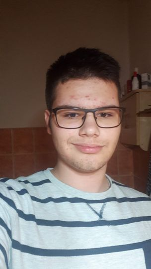
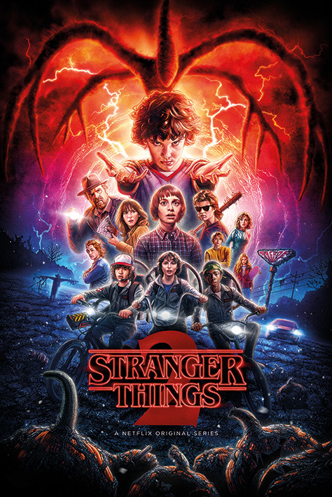
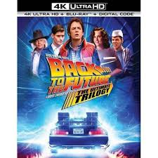

Varga Nándor Nimród

Személyes adatok:
Születési hely, idő: Kisvárda, 2005.11.07.
E-mail: nandornimrod@gmail.com
Tanulmányaim
Általános Iskolai tanulmányaimat a Mándok városban található
Sennyey Elza
Általános iskolában végeztem. 8. év közben sikeres középfokú B2-es angol nyelvizsgát tettem az
ELTE Origó Nyelvi
centrumban, Majd elkezdtem tanulni a DSZC Mechwart András
Gépipari és Informatikai Technikumon.
Elképzelésiem a jövőre nézve
- önmagam és szakmai tudásom továbbfejlesztése
- még ezen iskolai Tanulmányaim alatt szeretném az angol felsőfokú nyelvvizsgát
megszerezni
- Hosszútávú terveim közé tartozik az is, hogy idővel szeretnék a saját lábamon
megállni, és egy stabil életképes cég vezetője lenni.
Hobbijaim
-Szabadidőmben nagyon szívesen sportolok, de most az online oktatás miatt túl sok szabadidőm
nincs.
-Amikor ki szeretném kapcsolni teljesen az agyam és a kinti időjárás engedi, akkor kisseb rolleres
túrákra megyek
-Közeli terveim közé tartozik egy elektromos roller vásárlása is ami az alábbi képen látható.

-Szeretek filmeket, sorozatokat nézni, kedvenc sorozatom a Stranger Things,
kedvenc filmeim pedig a Pulp fiction (Ponyvaregény) és a Back To the Future Trilogy (Vissza a jövőbe trilógia)


.jpg "Pulp Fiction")